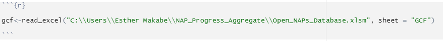
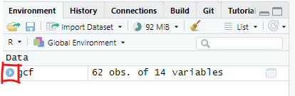
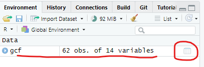
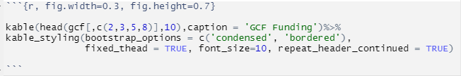

Chapter 5 Working Excel data
5.1 Prep
Steps;
5.1.1 Install packages
#install.packages(c("readxl", "magrittr", "knitr", "kableExtra", "DT", "plotly", "dplyr", "ggplot2", "treemapify"))5.1.2 Call libraries for the installed packages
library(readxl)
library(magrittr)
library(knitr)
library(kableExtra)
library(DT)
library(plotly)
library(dplyr)
library(ggplot2)
library(treemapify)5.1.3 Import excel table from local drive
To load and use excel data from local storage such as your pc, follow the following steps
- Create an object by typing in a name for the data you want to upload followed by the greater than sign and a hyphen/dash (<-).My object below is called ‘gcf’
- Call the library function
read_excelorread_csvin case your data is stored in csv format
- Inside the parenthesis, open single or double quotation marks
" "or'', enter the path to your excel file (you may copy and paste this form your file explorer address bar). Be sure to include the full name of your file including the format extension (.xls, .xlsx, .csv, etc)
- The backslash in markdown is a special character, therefore to avoid associated errors, add another backslash to each existing backslash in your path.
- Specify the sheet name or number in case your excel data has multiple sheets, otherwise skip this step
see screenshot below for all the steps above.

exceldata
- Run code
- Your data object appears in the environment window
- To view your data attributes and structure, click on the ‘play’ icon

view attr
- To view your data, click on the data object or table sign on the far right of your data set/object name

view excel data
gcf<-read_excel("C:\\Users\\Esther Makabe\\NAP_Progress_Aggregate\\Open_NAPs_Database.xlsm", sheet = "GCF")5.2 Build Tables
5.2.1 Static table
- Open a new code chunk
- Call the
kablefunction by typing in ‘kable()’ # auto fill is your friend - Fill in details as below ( since we are only plotting the first 10 rows of our table, we will add another argument called `head’ and specify we want to only plot columns 2,3,5,and 8 and only the first 10 rows)

kable table
Hover over the function to see parameters required or go to the ‘Help’ tab and search ‘datatable’ to see further details on its application.
kable(head(gcf[,c(2,3,5,8)],10),caption = 'GCF Funding')%>%
kable_styling(bootstrap_options = c('condensed', 'bordered'),
fixed_thead = TRUE, font_size=10, repeat_header_continued = TRUE, full_width = F)%>%
column_spec(1:4, width = "10em")| countryname | Region | Project Name | Total GCF Funding |
|---|---|---|---|
| Antigua and Barbuda | Latin America and the Caribbean | Resilience to hurricanes in the building sector in Antigua and Barbuda | 32706595 |
| Antigua and BarbudaDominicaGrenada | Latin America and the Caribbean | Integrated physical adaptation and community resilience through an enhanced direct access pilot in the public, private, and civil society sectors of three Eastern Caribbean small island developing states | 20000000 |
| Bahrain | Asia-Pacific | Enhancing climate resilience of the water sector in Bahrain | 2320388 |
| Bangladesh | Asia-Pacific | Climate Resilient Infrastructure Mainstreaming (CRIM) | 40000000 |
| Bangladesh | Asia-Pacific | Enhancing adaptive capacities of coastal communities, especially women, to cope with climate change induced salinity | 24980000 |
| Bangladesh | Asia-Pacific | Extended Community Climate Change Project-Flood (ECCCP-Flood) | 9681340 |
| Belize | Latin America and the Caribbean | Resilient Rural Belize (Be-Resilient) | 8000000 |
| Benin | Africa | Enhanced climate resilience of rural communities in central and north Benin through the implementation of ecosystem-based adaptation (EbA) in forest and agricultural landscapes | 9000000 |
| Bhutan | Asia-Pacific | Supporting Climate Resilience and Transformational Change in the Agriculture Sector in Bhutan | 25347194 |
| Burkina Faso | Africa | Africa Hydromet Program – Strengthening Climate Resilience in Sub-Saharan Africa: Burkina Faso Country Project | 22500000 |
5.2.2 Interactive table
- Open a new code chunk
- Install packages DT and magrittr
- Load their libraries
- Call
datatablefunction by typing in ‘datatable()’ # auto fill is your friend - Hover over the function to see parameters required or go to the ‘Help’ tab and search ‘datatable’ to see further details on its application.
- Fill in details as below
gcf_columns<-gcf[,c(2,3,5,8)] # selects only the columns we want to see in our table
datatable(gcf_columns,filter = 'top',rownames = F, editable = F, style = 'jqueryui', class = 'display responsive', width = '100%', caption = "GCF Project Funding", extensions = 'Buttons', options=list(pageLength= 5, dom='lfrtipB', buttons = c('copy', 'csv', 'excel', 'pdf')))%>%
DT::formatStyle(columns = colnames(gcf_columns),fontSize= '10px')